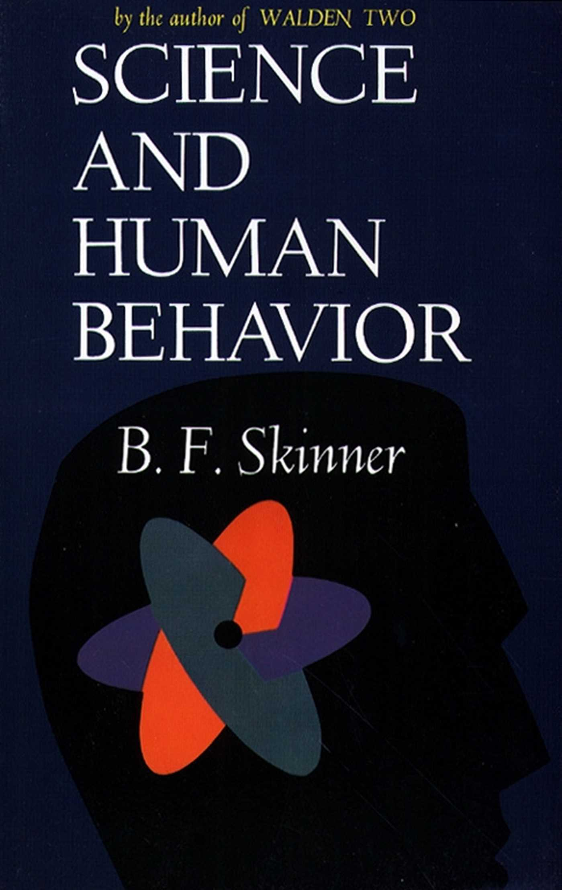

La vida de Skinner

Burrhus Frederic Skinner, más conocido como B.F. Skinner, nació el 20 de marzo de 1904 en Susquehanna, Pensilvania, Estados Unidos. Fue un influyente psicólogo, autor y pensador del siglo XX, conocido principalmente por sus contribuciones al campo de la psicología y el conductismo. Skinner estudió en la Universidad de Harvard, donde obtuvo su doctorado en psicología en 1931. A lo largo de su carrera, desarrolló y promovió la teoría del "condicionamiento operante", que se convirtió en uno de los pilares del conductismo. Esta teoría se centra en el estudio de cómo las consecuencias de un comportamiento influencian la probabilidad de que ese comportamiento se repita en el futuro. Durante su vida, Skinner llevó a cabo una serie de investigaciones pioneras utilizando animales, como ratas y palomas, en experimentos de condicionamiento operante. Sus estudios ayudaron a comprender cómo se pueden moldear y modificar los comportamientos mediante el refuerzo positivo, el refuerzo negativo y el castigo.En 1953, publicó su libro más influyente, "Science and Human Behavior" (La ciencia y el comportamiento humano), en el que explicaba sus ideas sobre el comportamiento humano y cómo podían aplicarse en la educación y la sociedad.
 Skinner también fue un defensor de la tecnología de enseñanza, desarrollando máquinas de enseñanza y sistemas de enseñanza programada que buscaban mejorar la eficacia de la educación. Su trabajo tuvo un impacto significativo en la educación y la psicología, y contribuyó al desarrollo de la psicología del aprendizaje y la terapia conductual.B.F. Skinner falleció el 18 de agosto de 1990 en Cambridge, Massachusetts, dejando un legado duradero en el campo de la psicología y el estudio del comportamiento. Sus ideas y teorías siguen siendo estudiadas y debatidas en la actualidad.